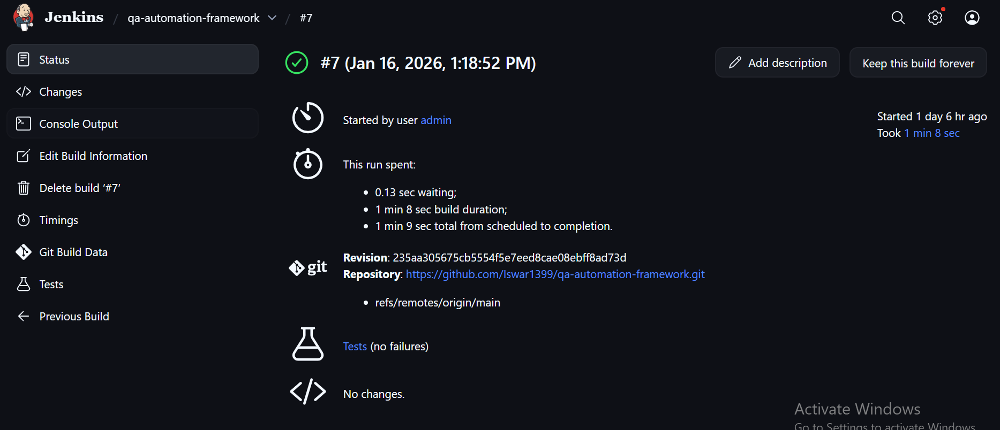

Iswarya Manishankar
QA / SDET | Automation Engineer
About Me
I am a QA Engineer with hands-on experience in testing and automating
e-commerce applications. I have worked on both manual and automation
testing, covering critical business flows such as login, product
selection, order placement, payment validation, and delivery tracking.
On the automation side, I have designed and developed a Java-based
Selenium automation framework using TestNG and Maven, following the
Page Object Model (POM). I have automated end-to-end UI workflows,
performed API validations using Postman and basic Rest Assured,
and integrated CI/CD pipelines using Jenkins.
I am experienced in writing test scenarios and test cases, executing
regression cycles, logging and tracking defects, and collaborating
closely with developers and product teams to ensure high-quality
releases.
E-Commerce Application – QA Responsibilities
Business Flows Tested
- User registration and login authentication
- Product search, selection, and cart management
- Order placement and payment success/failure scenarios
- Order tracking, delivery confirmation, and logout
Manual Testing
- Analyzed requirements and prepared detailed test scenarios and test cases
- Executed functional, regression, smoke, and sanity testing
- Validated UI behavior and API responses using Postman
- Logged defects with clear reproduction steps and priority
Automation Testing
- Automated critical e-commerce flows using Selenium WebDriver and Java
- Designed reusable Page Object Model (POM) classes
- Validated REST APIs using Postman and basic Rest Assured scripts
- Implemented regression test suites
- Executed automation via Jenkins CI pipelines
Skills
- Automation: Selenium WebDriver, Java, TestNG, Maven
- API Testing: Postman, Rest Assured (basic)
- CI/CD: Jenkins
- Tools: Git, Docker, Extent Reports
- Manual Testing: Test Planning, Test Cases, Defect Tracking
Projects
QA Automation Capstone Framework
- Developed an end-to-end UI automation framework using Java and Selenium
- Used TestNG, Maven, and Page Object Model (POM) for scalability
- Integrated Jenkins for CI/CD execution
- Dockerized test execution for consistent environments
- Generated Extent Reports with screenshots on failure
View Project on GitHub
CI/CD – Jenkins Pipeline
Integrated Jenkins with the automation framework to enable continuous
integration. Jenkins pulls the source code from GitHub, executes
Maven-based Selenium automation tests, and validates test results
on each pipeline run.
